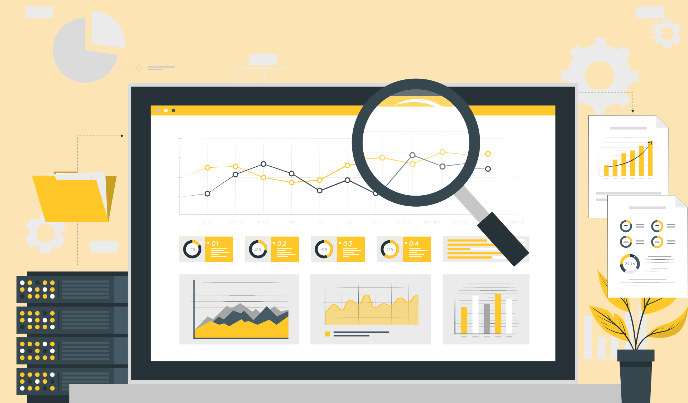
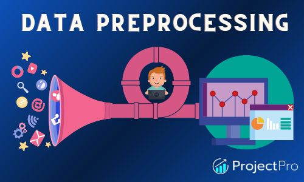

As I turn raw housing data into an useful, well-organized dataset, observe the power of data transformation in action. Examine how this procedure produces insightful results by simplifying and making complicated data relevant.

Experience the power of data visualization with my 'Office Supplies Sales in Power BI' project. From transforming raw data to building dynamic dashboards, explore sales trends, top customers, and profit analysis, empowering strategic decision-making
This holds all of my Tableau Dashboards
Explore the world of food sales analytics with my project. Uncover regional trends, top customers, and delivery performance insights for effective business strategies.

Dive into the world of entertainment analytics with my Power BI project on Amazon Prime datasets. Explore show ratings, genre distribution, and regional insights for a comprehensive understanding of content trends.

Examine various aspects of Python data preparation with my project.Witness the transformation of raw handwritten images into refined data ready for machine learning models through segmentation, filtering, patch scanning, augmentation, and data cleaning.
Discover insights into the 2022 annual sales of a store through my Excel-based report project. From data cleaning to insightful dashboard creation, explore age and gender-wise sales, top states, order statuses, and sales channels breakdown.
This Power BI project focuses on extracting actionable insights from a professional survey dataset. Experience the journey of data transformation as raw data evolves into valuable insights, including country demographics, average job salaries, programming language proficiency, and survey responses on work-life balance and salary satisfaction.
Explore insights from a bike buyers dataset in Excel through my project. Uncover customer demographics, commute patterns, and average income per purchase, with slicers to delve deeper into purchasing preferences.